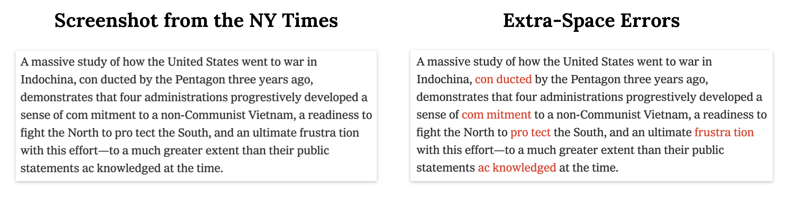
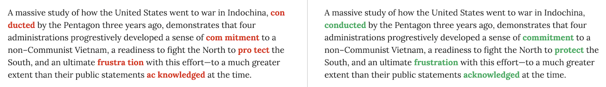

About
Background
Back in May, I was working on a school project about the Pentagon Papers.
The Pentagon Papers was a government paper including thousands of pages of classified documents about the Vietnam war. The New York Times and the Washington Post released the Papers in the form of several key articles in June 1971. After publishing only three articles about the Papers, the NY Times received an injunction from Former U.S. Attorney General Mitchell. The Washington Post received a similar injunction, and decided to file a joint lawsuit with the NY Times requesting permission to continue publishing. The case went to the U.S. Supreme Court and the newspapers had a 6–3 victory and were able to continue publishing.
As part of my school research into the Papers, I read several of the 1971 articles about the subject published in the NY Times. The Times has luckily created a great system for accessing older articles, the TimesMachine, which includes hundreds of transcribed articles from physical newspapers.
The Problem
The first front-page article released by the NY Times which began the release of the Pentagon Papers was Vietnam Archive: Pentagon Study Traces 3 Decades of Growing U. S. Involvement.
Let's take a look at the first paragraph of that article. As you are reading, you may notice several errors with extra spaces right in the middle of words. These errors have been highlighted on the right column.
Article content used under Fair Use for educational and research purposes.
These errors with extra spaces in between words are present throughout the rest of article as well. In fact, this error occurs thousands of times in hundreds of transcribed NY Times articles, particularly ones from the 1970s.
Personally, while quoting NY Times articles in a school essay, I had to manually fix this error myself countless times in just a few paragraphs of transcribed article text.
My Program: a Simple, Effective Solution
This site showcases a program I've built to fix this issue. The program is written in plain JavaScript, and documentation can be found at the GitHub repo. Given easy access to Node.js or a web browser, it would be very straightforward to automatically fix articles in the 1970s period with the program. In fact, fixing a single article using the program only requires two lines of code.
Here's a screenshot of the program in action in the examples page.
You can go check out example fixes from six famous NY Times articles, processed with the program. You can also try it out yourself.
How It Works
The foundation of the algorithm used in the program is use of a 300,000+ word dictionary, ordered by how common a given word is. Dictionary data was accessed with Google's Ngram Viewer, compiled by the Google Books team, which has reportedly scanned through more than 25 million books.
The algorithm searches through each word in the article and assigns a numeric value to represent how common the word is. Unrecognized words are given a negative numeric value. It then checks if combining the word with an adjacent word would improve the numeric value of the word.
For example, let's say we have the following text: 'Hello wor ld!'. 'Hello' has a high numeric value of 330,357, and combining 'Hello' with its adjacent 'wor' yields 'Hellowor', with a numeric value of -332,681. Since 'Hello' clearly has a higher numeric value than 'Hellowor', the algorithm considers this potential combination to not be optimal. Conversely, with 'wor' and 'ld', 'wor' has a numeric value of 301,358 and 'ld' has a numeric value of -332,681. 'world' has a numeric value of 332,569, which is greater than the numeric values of 'wor' and 'ld' combined. Thus, the algorithm determines that combining 'wor' and 'ld' to make 'world' is optimal.
The algorithm additionally uses a number of utility functions to remove irrelevant punctuation while processing the article, but add the punctuation back after it has made fixes, and also adds developer-friendly options to easily highlight or add code before and after fixed errors for example.
Use it Yourself
You can the program out at the try it yourself page.
For developers:
If you'd like to try fixing articles with this type of error automatically, go read the documentation at the GitHub repo. The source code is located at the GitHub repo as well.
Interested in contributing to this project? Submit a pull request at the GitHub repo. If you find a bug, you can submit an issue at the repo as well.
I hope you like this project! If you want to see more of my work and my personal blog about anything and everything programming, check out xtrp.io.
— Gabriel Romualdo